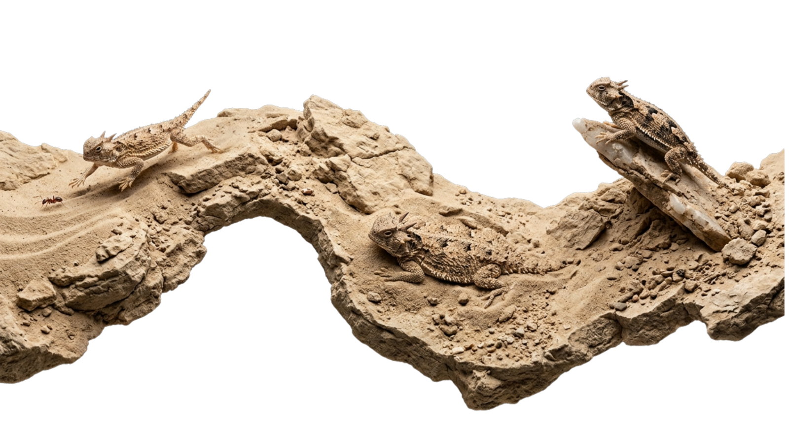

Assessing environmental change and population declines of large wading birds in southwestern India
Aarif, K.M., Nefla, A., Rubeena, K.A., Xu, Y., Bouragaoui, Z., et al.
Environmental and Sustainability Indicators, 25, 100572
A selection of publications and conference proceedings spanning biodiversity conservation, herpetology, ecological restoration, and species monitoring across North Africa and beyond.

Assessing environmental change and population declines of large wading birds in southwestern India
Aarif, K.M., Nefla, A., Rubeena, K.A., Xu, Y., Bouragaoui, Z., et al.
Environmental and Sustainability Indicators, 25, 100572
State of Knowledge on the Biodiversity of Continental Wetlands in Southern Tunisia
Ben Aba, W., Bouragaoui, Z., et al.
24th Sahel & Sahara Interest Group Conference (SSIG), Tozeur, Tunisia
UN Decade on Ecosystem Restoration: key considerations for Africa
Nsikani, M.M., Anderson, P., Bouragaoui, Z., et al.
Restoration Ecology
Notes on Reforestation in Tunisia
Bouragaoui, Z.
Forum Tunisien pour les droits économiques et sociaux
Breeding biology of Eleonora's falcon (Falco eleonorae) within the Galite archipelago
Ben Jemaa, H., Nefla, A., Bouragaoui, Z., & Nouira, S.
Biologia, 76(5), 1491–1499
Confirmation of the presence of Calicnemis obesa obesa (Coleoptera: Scarabaeidae: Dynastinae) in Tunisia
Ben Aba, W. & Bouragaoui, Z.
Munis Entomology & Zoology, 381
Assessing solifuge biodiversity in Tunisia: new data on Biton velox and first report of Tarabulida (Solifugae, Daesiidae)
Guariento, L.A., Bolognin, L., Ben Aba, W., Bouragaoui, Z., Kilani, F. & Ouni, R.
Spixiana
Age Determination of the Sand Lizard Psammodromus algirus by means of Skeletochronology
Bouragaoui, Z. & Nouira, S.
Current Herpetology, 32(2)
Diet of the lacertid lizard Psammodromus algirus in North Tunisia
Bouragaoui, Z., Ben Aba, W., & Nouira, S.
Sonoran Herpetologist, 32(1), 5–8
Confirmation of the presence of the ground beetle Chlaenius tristis tristis (Schaller, 1783) in Tunisia
Ben Aba, W. & Bouragaoui, Z.
Amateur Entomologists' Society, 77: 243–245
Mantodea biodiversity and conservation in Tunisia: current status and challenges
Guariento, L.A., Sartore, V., Bouragaoui, Z., et al.
Intl. Workshop on Orthopteroid Insects, Rovereto, Italy